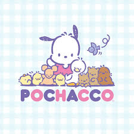

Elizabeth Zettler

Summary
Accomplished teacher of over a decade looking for a change in profession and learning to be the best web developer I can be.
Education
- Masters of Business Administration - Georgia Southern University (2011)
- Master of Vocal Performance - Georgia Southern University (2009)
- Bachelor of Vocal Performance - Georgia Southern University (2007)
Work Experience
- After School, Homeschool, and Adult Education Instuctor
January 2023 - Present
- Develop and implement creative, engaging, and educational after school programs for kids ages years and up
- Develop and lead adult classes in groups and private lesson situation - focus is on a range of handwork skills including crochet, felting, sewing, and more
- Maintain close contact and relationships with parents of each student
- Transport, set up, take down all materials necessary for each class, including student work from week to week
- Strive to build personal, individual relationships with every participant in each of my class
- Manage kids behavior using positive behavior strategies, reinforcement, and intrinsic incentives
- Teacher Training Instructor
2020-Present
- Present on grade specific curriculum, focusing on developmental stages, creating community, crafting and structuring the main lesson, storytelling and grade level archetypes - Kindergarten-4th grade (2023), 2nd grade intensive (2022), and 4th grade intensive (2021, 2022)
- Present on classroom management, emphasizing the use of intrinsic motivation, personal relationships, and developing ownership of the classroom through programs such as Classroom Economy (2021)
- Co-Presented on the integration of skills block with main lessons (2020)
Skills and Abilities
Additional Training
- Summer 2021 and 2023 Antioch Grade Level Intensive Courses
- Summer 2020 Alliance of Public Waldorf Education Professional Development Training (2 weeks)
- Winter 2020 Workshop with Kentahten Teacher Training Program, Louisville, Kentucky
- Summer 2019 Training through UNF with Dr. Mary Goral, Rob Lanier, and Delana Hill
- Summer 2018 Training with Dr. Mary Goral, Delana Hill, and Dr. Liz Beaven through Seaside
- Summer 2017 Training with Dr. Mary Goral and Dr. Liz Beaven through Seaside
Creative Skills
Avid crafter and talented seamstress, experienced in multiple handwork areas. Lover of chalk drawings and adequate at watercolor and knitting, but a master finger knitter. Background in music and teaching singing, recorder, and numerous other instruments.
Other